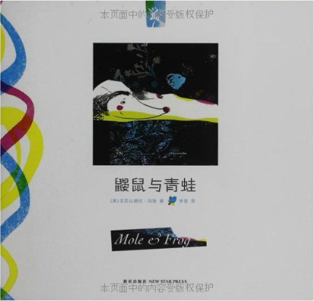时差绘本•童话:鼹鼠与青蛙亚历山德拉•玛驰 (Alexandra March)  《鼹鼠与青蛙》的灵感源自经典俄罗斯民谣“蜻蜓和蚂蚁”，这首民谣最早由一个俄罗斯古代寓言改写而成。亚历山德拉改编了原本一个悲惨的民间故事。在这个新编现代版故事里，鼹鼠和青蛙因为苍鹭的一次玩笑，都意识到工作与玩乐之间原来还有一种平衡存在。 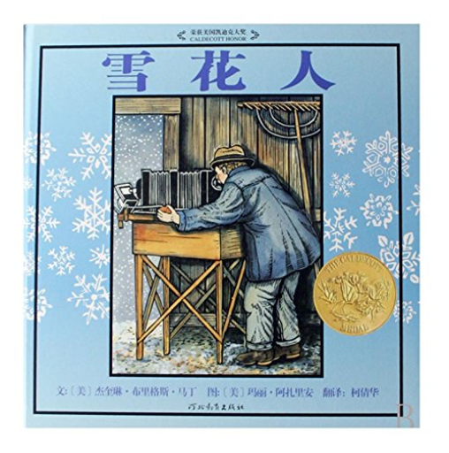雪花人杰奎琳•布里格斯•马丁(Jacqueline Briggs Martin), 玛丽•阿扎里安(Mary Azarian) 《雪花人》内容简介：这是一个真实的传记故事，威利•班特利很喜爱雪花，他的父母送他一台显微照相机，他就想出各种方法把看到的雪花拍下来，酷寒的温度无法冻却他的热情，残暴的风雪也无法阻挡他的脚步，他一直坚持到人生的终点，最终，他从一个单纯的农人变成一个雪的专家，人们因此称他“雪花人”。 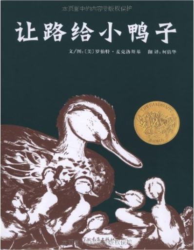让路给小鸭子罗伯特•麦克洛斯基 (Robert McCloskey) 《让路给小鸭子》这是一本最仁慈的书，人与自然和谐共处，是这本六十多年前创作出的、开本巨大的图画书的一个不言而喻的主题。深褐色、略带那么一点暖暖的暗红色的笔触，画了一个警察拦下所有车辆，护送排成一排的鸭子过马路的温情脉脉的故事。 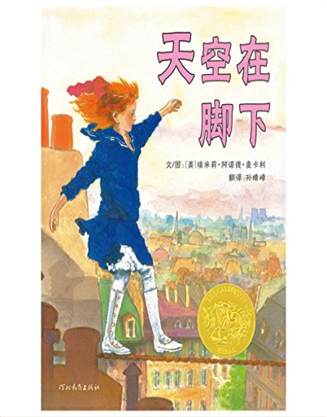天空在脚下埃米莉•阿诺德•麦卡利(Emily Arnold Mccully) 《天空在脚下》内容简介：一天，一个忧伤神秘的陌生人来到寡妇葛戴的小旅馆住了下来，他沉默寡言、独来独往。寡妇葛戴的女儿米瑞无意中看到他在后院练习走钢绳索。聪明勇敢的小米瑞抑制不住心中的好奇，开始和陌生人学习走钢索，进而发现，这个陌生人居然是曾经名噪一时的走钢索明星——贝利尼。然而，在贝利尼的身后竟然有着令其不堪回首的记忆——钢索上的恐惧感。于是，故事在小米瑞与贝利尼相互的关爱与帮助中进一步展开。 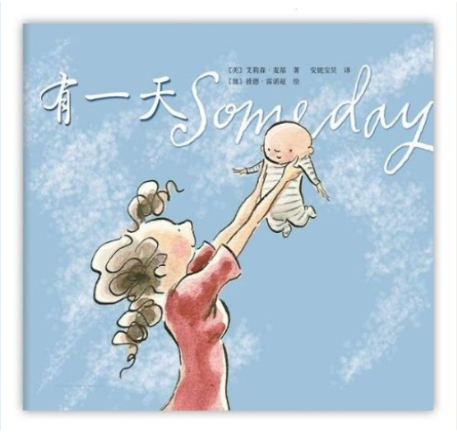有一天艾莉森•麦基 (Alison McGhee) 《有一天》内容简介：“那一天，我数算你的手指，轻轻把它们亲遍。”一位母亲简单但充满感情的一句话为《有一天》拉开了序幕。接着，母亲感慨万千地回忆起孩子成长过程中的点点滴滴，看着熟睡中的孩子，不禁开始梦想孩子的一生：有一天，孩子的眼眸会充满喜悦；有一天，孩子也会被忧伤包围；有一天，妈妈会看着孩子长大、离家；有一天，孩子也会有自己的孩子，温柔地给自己的宝贝梳头……画面中，我们能看到的是孩子的兴奋、忧伤、欣慰或激动；画面外，我们看不到的，是一位母亲关切的目光。孩子的每一种情绪都深深牵动着母亲的心。简单质朴的语言，传达出如天空和海洋般辽阔的母爱。 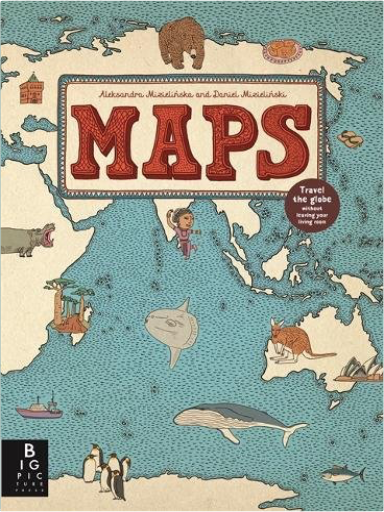MapsAleksandra Mizielinska, Daniel Mizielinski Author: Aleksandra Mizielinska 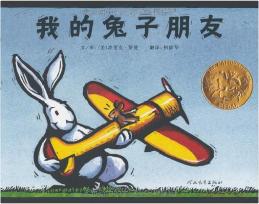我的兔子朋友埃里克•罗曼(Eric Rohmann) 《我的兔子朋友》内容简介：我的兔子朋友很好，但无论他去哪里、做什么，肯定惹麻烦，不过他依然是我的好朋友……这是一个关于宽容的故事，在令人欢欣的图画背后，含蓄地表达了关于耐心和忠诚的主题思想。 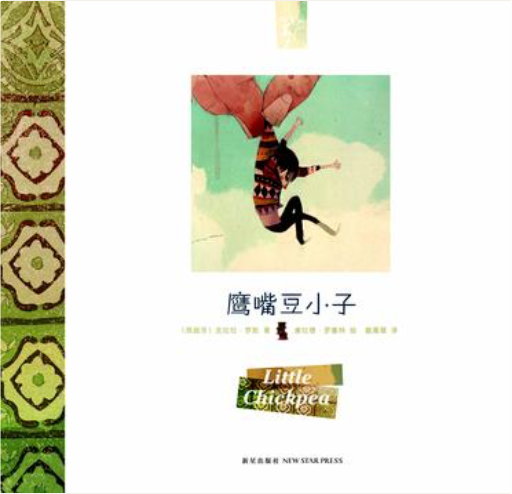时差绘本•童话:鹰嘴豆小子克拉拉•罗凯 (Clara Roquet) 《鹰嘴豆小子》内容简介：故事起源于意大利，风行于南欧。故事描绘一个豆小子从鹰嘴豆里蹦出来后外出探险的神奇经历。在故事中小读者跟随着小不点的视线去探寻外面的世界，体验到生命的偶然和对“小”与“大”的思考。在故事的最后，“豆小子”靠聪明、勇敢战胜了“大家伙”，励志的内容更适合亲子共读。 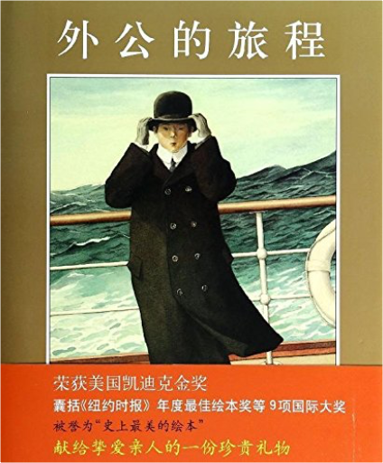外公的旅程艾伦·塞伊 (Allen Say) 宽阔的大洋，壮观的沙漠，喧嚣的城市……他爱这个全新的国家里的一切，在这里安家落户，却在女儿长大后想起了自己的故乡；他怀着乡愁回到祖国，重新看到了故乡的群山和河流，却又开始思念异国他乡的一草一木……艾伦•塞伊通过对外公在日美两国生活的回忆，讲述了自己家庭中独有的跨文化经验。本书的文字饱含深情、感人至深；画面精致而温暖，宛如一帧帧写满历史与回忆的老照片。这是著名绘本作家艾伦•塞伊最有名的作品，也是他在两种文化之间搭起的一座桥梁。 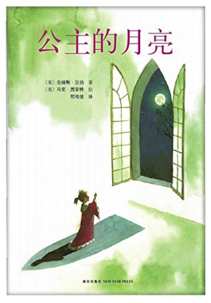公主的月亮詹姆斯·瑟伯 (James Thurber) 可爱的公主生病了，国王心疼之余答应要给她最想要的东西，公主居然开口要月亮。国王只好找了许多聪明人来帮忙，虽然他们都曾有过丰功伟业，但是对于公主这个离谱的要求，却都束手无策。最后，宫廷小丑出现了…… 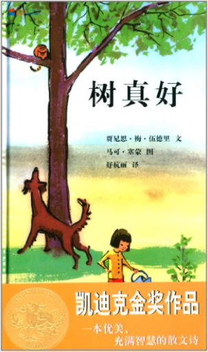蒲蒲兰绘本馆:树真好贾尼里·梅·伍德里文 (Janice May Udry) “树真好。高高的大树遮住了天空”；“树长在河边，树长在山谷，树长在高高的山顶上”；“很多很多树在一起，就叫做大森林。树让一切都变得那么好”；“如果你只有一棵树，那也很好。因为，树上有好多树叶。整个夏天，都可以听到风吹树叶，沙沙地响”… … |
 Made with Delicious Library
Made with Delicious LibraryGuangzhou, AP zipflap congrotus delicious library Yv, Jarod